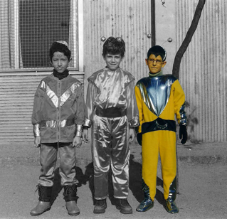
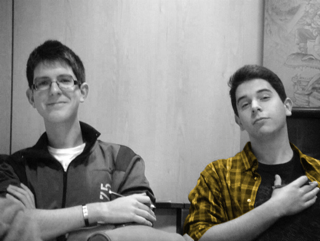

“Oye, deberíamos hacer un cómic de…”
“Quiero hacer una ilustración sobre…”
“¿Sabes? Estaría muy guay que…”
¿Os suena?
Cuando las personas creativas tenemos una gran idea nos ilusiona y queremos llevarla a cabo sea como sea, pero por unos motivos u otros muchas de esas ideas jamás llegan a ver la luz.
Para explicar mi historia tenemos que remontarnos años atrás, a una época oscura de la humanidad: los años 90. Por aquel entonces era un muchacho con gafas que se pasaba horas y horas dibujando a unos monstruitos de un videojuego japonés muy popular entre los niños de la época, no se si los conocéis. No era Kim Jung Gi que digamos, pero dibujaba mucho mejor que los demás niños de clase y sobretodo, me encantaba lo que hacía.
Los años pasaron y, mientras los demás chavales se iban de botellón a un descampado, yo seguía dibujando. En algún punto de la adolescencia mi estilo de dibujo se estancó, quería mejorar pero sabía que jamás lo lograría sin ayuda, así que empecé a tomar clases en Escolajoso, gracias a sus profesores y alumnos sigo dibujando HOY, incluso con más ilusión que ayer. Me ayudaron a bajarme los humos, a conocer a personas increíbles que amaban dibujar tanto como yo y a aprender que siempre queda todo por aprender.
Ahora, soy diseñador web y amo lo que hago, pero sigo siendo un crío que se encierra en su cuarto a dibujar todo lo que se le ocurre, sigo dibujando, sigo ilusionado y sigo mejorando, consciente de que queda un infinito camino por andar, pero eso es lo que mola, ¿No?
Víctor Marín, mi primo y compañero de armas, estaba harto de que el día a día y las obligaciones que conlleva nos impidieran llevar a cabo todas las ideas que teníamos guardadas en lo más profundo de un cajón y que fervientemente deseábamos hacer realidad. En su cabeza rondaba la idea de juntar a un pequeño grupo de artistas jóvenes con ganas de hacer grandes cosas.
Artistas de diferentes ámbitos que colaborarían en proyectos conjuntos, en hacer realidad todas aquellas ideas que luchan día a día por salir de nuestras cabezas y que demasiado habitualmente dejamos morir. Todos estos proyectos se publicarían dentro de un macroproyecto, un lugar donde compartir ideas, recuperarlas, transformarlas, darles una nueva vida…
La Deixalleria
Pau Urrutia, La Deixalleria.